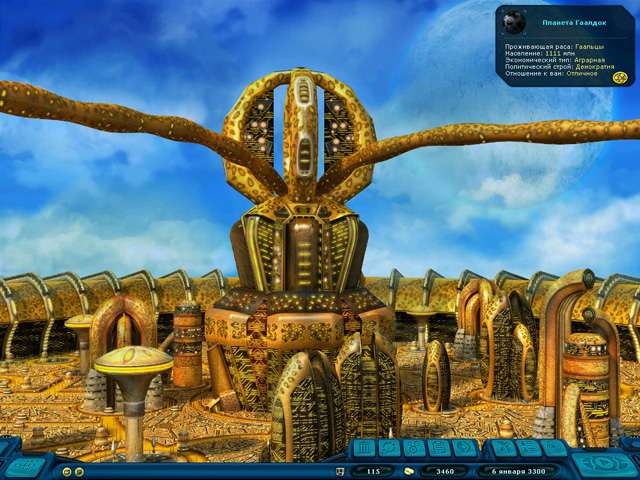
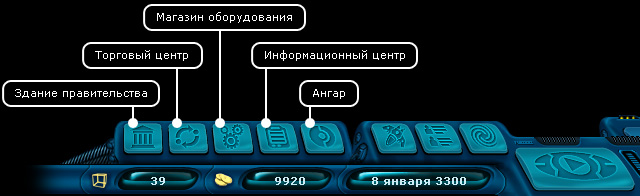

Руководство рейнджера > Экран планеты
|
Руководство рейнджера > Экран планеты
|
| Экран планеты После посадки перед вашим взором предстает экран с открытым видом планеты. В правом верхнем углу располагается окошко с информацией о проживающей расе, политическом и экономическом строе, численности населения и отношении планеты к рейнджеру. |

| Численность населения планеты влияет на количество товаров в торговом центре
и оборудования в магазине. Экономический тип определяет цены на группы товары:
• Аграрная - невысокая стоимость продуктов питания, медикаментов и алкоголя. • Смешанная - цены на все товары средние. • Индустриальная - невысокая стоимость техники и роскоши. Политический строй влияет на легальность товаров, например, наркотиков и алкоголя. Строй может быть одним из пяти возможных: • Анархия • Диктатура • Монархия • Республика • Демократия От отношения планеты к вам очень многое зависит. Вы можете получать специальные правительственные задания, только если отношение к вам хорошее или отличное. Если отношение к вам плохое, вы не сможете торговать, покупать оборудование или пользоваться информационным центром. Однако чтобы поправить свою репутацию, вы можете дать чиновнику в здании правительства взятку. Но даже это не поможет, если отношение к вам уже опустилось ниже плохого - вас могут даже посадить в тюрьму, чтобы у вас было время подумать над своим поведением. :-) В режиме планеты над основной панелью навигации появляются дополнительные кнопки: |

| Здание правительства
(G) - получить правительственное задание, купить звездную карту, дать
взятку для улучшения отношения. Магазин оборудования (E) - купить оборудование. Торговый центр (T) - купить/продать товары для перевозки. Информационный центр (I) - узнать последние общегалактические новости, воспользоваться поисковой базой данных. Ангар (H) - заправиться, взлететь с планеты. |